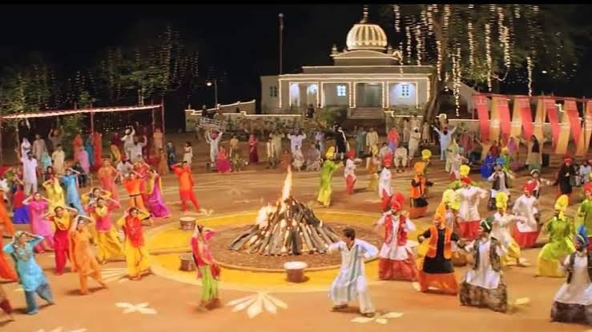

Lohri is one of those festivals in India which holds historical significance. It is a festival of harvest. The festival is celebrated in mid-January in the Indian states of Punjab, Haryana, and Himachal Pradesh.It bids farewell to winter and celebrates the arrival of the spring. People believe that after the day of Lohri, the days start becoming longer and the nights shorter.People celebrate Lohri by lighting bonfire during the evening, and they dance on the music produced through the dhol, eat traditional dishes and sing famous folk songs.
Performing bhangra and Giddha by both men and women are very much inclined to this festival. Most of the children go house to house and sing folk songs and as offerings, they receive money or something to eat.Lohri is basically associated with the worship of fire and the sun. Like every other festival in India, people in Lohri also meet their relatives and exchange love, greetings and presents. In Punjab, Lohri holds much significance as it welcomes the season of harvest in Punjab. Sikhs, Hindus, Muslims, and Christians from Punjab, India, celebrate this festival with great amazement.
The significance of Lohri is associated with the legendary story of Dulla Bhatti, the Robin Hood of Punjab. In other words, most of the Lohri songs are dedicated to Dulla Bhatti. Maker Sankranti arrives the night after Lohri. Basically, both Lohri and Makar Sankrati fall at the same time every year, bringing with them a huge amount of happiness for the people. On this occasion, people buy sweets for themselves, for their families, relatives and especially, for Gurudwara. They visit gurudwara which is the most intense and enlightened part of their celebration.